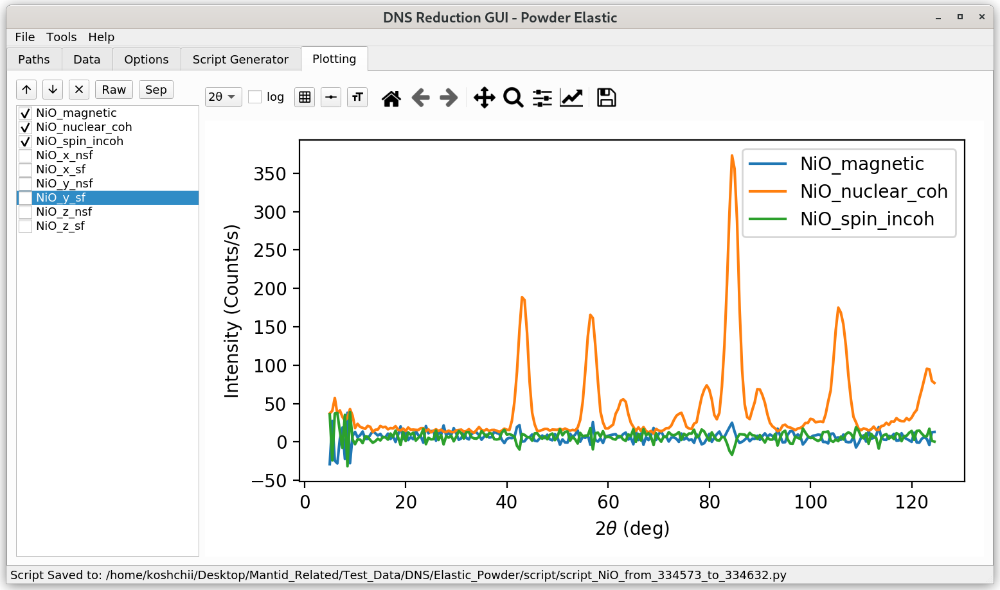

\(\renewcommand\AA{\unicode{x212B}}\)
DNS Powder Elastic - Plotting Tab¶
The Plotting tab offers basic plotting functionality for reduced data sets.
{kind=link}
A selection table with various scattering channels of reduced data is provided on the left side. The user can select which channels should be visualized. With the up and down arrows, one can move through each available single channel. The Raw button selects for visualization all the scattering channels chosen by the user in the Sample Data view of the Data tab. The Sep button selects the workspaces with separated nuclear coherent, spin-incoherent, and magnetic contributions. The latter contribution is available when the \(xyz\)-separation option is selected by the user.
The dropdown \(2 \theta\) box can be used to switch the labels of the \(x\)-axis between the scattering angle \(2 \theta\), scattering vector q, and spacing \(d\). The log checkbox can be used to switch to the logarithmic \(y\)-axis scaling. The buttons to the right from it can be used to change grids, line styles, and error bars.